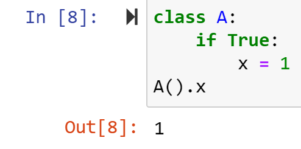

אבל הוא לא מכיר את הביטוי self, אני מניח שזה כי התנאי לא מקבל אותו בתור ארגומנט.
חשבתי גם ליצור מחלקה של קובץ בינארי מסוג תמונה שיורשת מקובץ בינארי כללי, אבל מרגיש שזה לא בדיוק עונה על הצורך.
יש דרך ליצור תנאי בתוך המחלקה? או אולי דרך אחרת שלא חשבתי עליה?
eyalmerav
ניראה לי שאתה אמור ליצור פעולה בתוך המחלקה
ובתוכה לעשות את התנאי
והוא מחזיר טרו / פולס ולפי זה אתה עובד (מדפיס או לא מדפיס…
אי אפשר בתוך מחלקה לכתוב תנאי ללא כל שיוך
כי במחלקה יש או הגדרה של שדות (תכונות האובייקט) או פעולות שניתן לעשות על אובייקט…
תנאי זה לא אף אחד מאלו ולכן לא ניתן לכתוב זאת כך.
zurikarat
אין לך self, אם תתחום את זה בתוך פונקציה ותתן לה כארגומנט את self אז נראה לי שיהיה אפשר, אם אפשר ליצור פונקציה רק תחת תנאי.
Yam
חשוב לי להבהיר שזה לא נכון (למרות שזה כן מאוד נדיר):

בנוגע לשאלה של @elador9 – כמו שאמרת, בשורה 5 ה־self שלך אינו מוגדר.
כדי שיהיה self צריך להגדיר פונקציה, ואם תגדיר פונקציה B שתקבל self, הפונקציה C שתיצור בתוכה תהיה קיימת רק בתוך הפונקציה B.
זה בעיה, ודווקא נשמע שהכיוון השני שהלכת עליו הוא לא רע.

{kind=link}